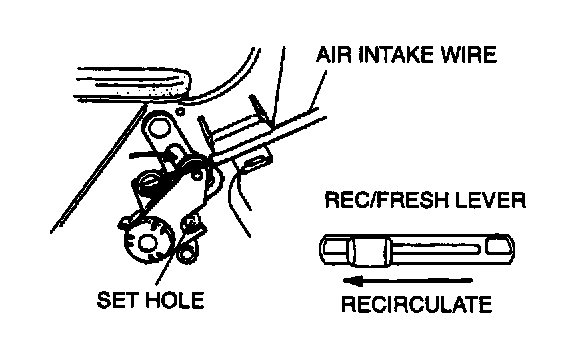
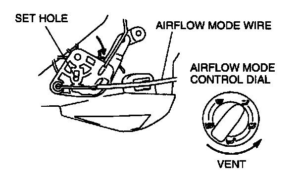
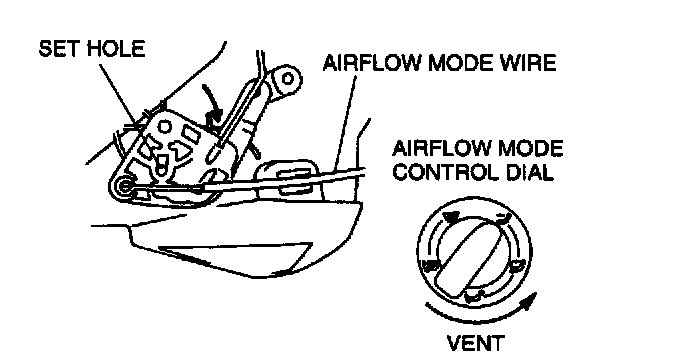

Control Assembly: Adjustments
HEATER CONTROL UNIT WIRE ADJUSTMENTAir Intake Wire

1. Set the REC/FRESH lever at REC.
2. Set the air intake link to REC in the direction of the arrow and insert a screwdriver into the set hole.
3. Connect the air intake wire to the air intake link.
4. Clamp the air intake wire to wire clamp.
5. Verify that the REC/FRESH lever moves its full stroke.
Air Mix Wire

1. Set the temperature control dial at MAX HOT.
2. Set the air mix link to MAX HOT in the direction of the arrow and insert a screwdriver into the set hole.
3. Connect the air mix wire to the air mix link.
4. Clamp the air mix wire to wire clamp.
5. Verify that the temperature control dial moves its full stroke.
Airflow Mode Wire

1. Set the airflow mode control dial at VENT.
2. Set the airflow mode link to VENT in the direction of the arrow and insert a screwdriver into the set hole.
3. Connect the airflow mode wire to the airflow mode link.
4. Clamp the airflow mode wire to wire clamp.
5. Verify that the airflow mode control dial moves its full stroke.